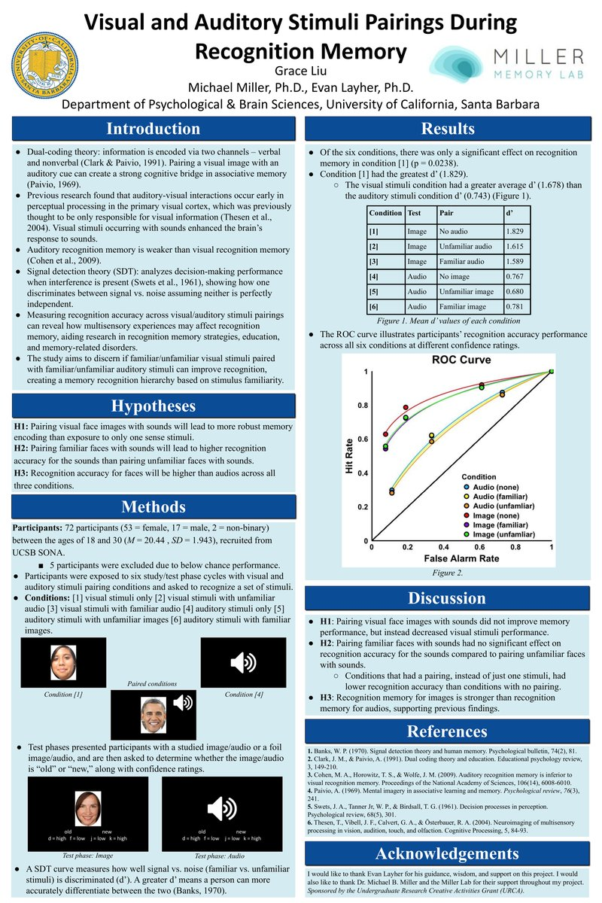
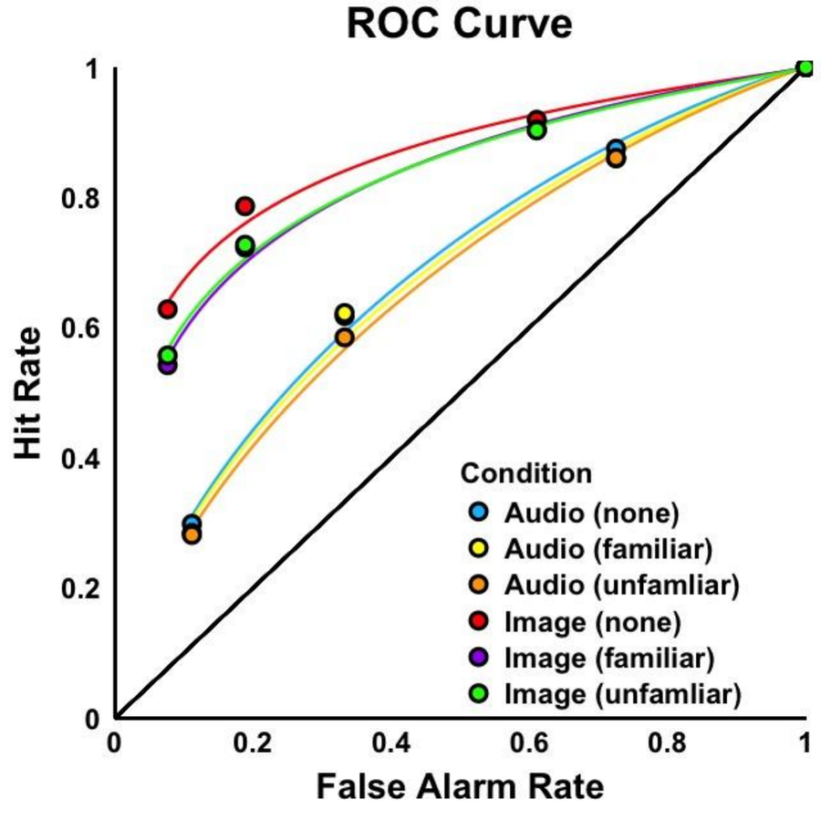

TLDR
- The prediction
- Dual-coding theory says information encoded through two channels is remembered better than one. Pairing a face with a sound should strengthen the memory.
- What happened
- The opposite. Faces were recognized best when shown alone, and worse when paired with any sound. Pairing didn't help sound recognition either.
- How I read it
- The theory isn't wrong, it just has limits. When a face and an unrelated sound appear at the same time, they compete for attention instead of helping each other.

Results
Participants studied faces, sounds, or face–sound pairs, then judged test items as "old" or "new" with a confidence rating. I measured recognition with d′ (how well people told studied items from new ones; higher is better).
| Tested on | Paired with | d′ |
|---|---|---|
| Face | Nothing | 1.83 |
| Face | Unfamiliar sound | 1.62 |
| Face | Familiar sound | 1.59 |
| Sound | Nothing | 0.77 |
| Sound | Unfamiliar face | 0.68 |
| Sound | Familiar face | 0.78 |

Conclusion
Dual coding describes a benefit from two integrated representations of the same thing, like an image and the word naming it. My design paired two unrelated items at the same moment with no reason to bind them. Attention split, and the item that lost most was the one being encoded best. The prediction failed because my design didn't match the theory's mechanism, not because the theory is wrong.
Going forward
- Separate discrimination from bias. Signal detection theory taught me to distinguish whether someone can tell two things apart from whether they're inclined to say so, which shows up constantly in survey and product research.
- Match the design to the mechanism. I now write out the mechanism I think is operating before designing the manipulation.
- A failed prediction is a result. A specific, unexpected pattern (a cost in one modality, nothing in the other) is informative in a way a noisy null isn't.
Conducted in the Miller Memory Lab at UC Santa Barbara with support from an Undergraduate Research & Creative Activities grant. Participants are de-identified.